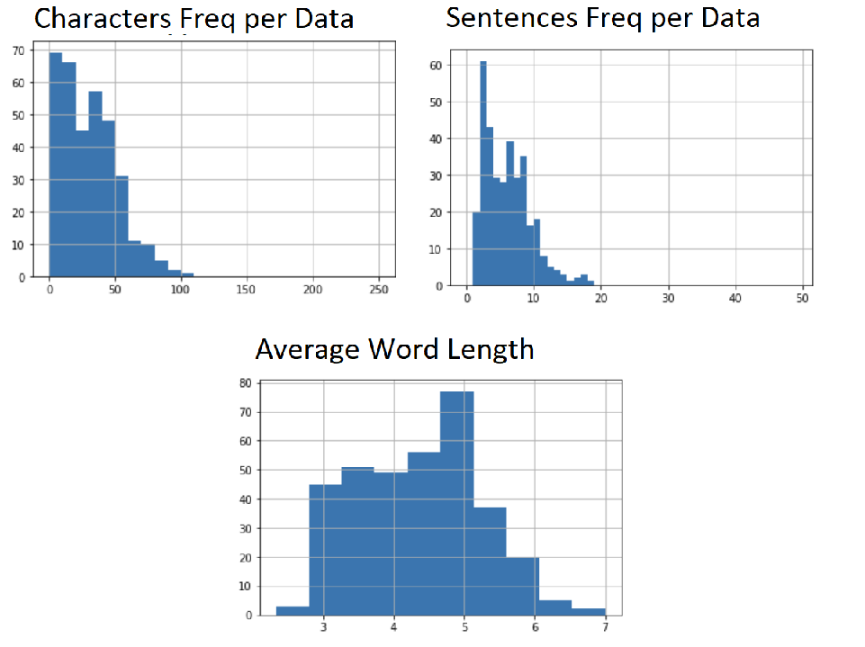
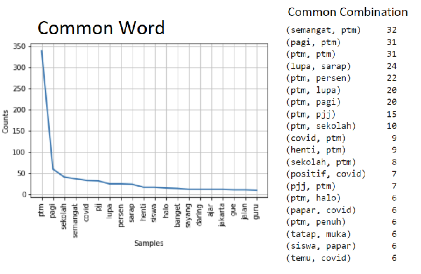
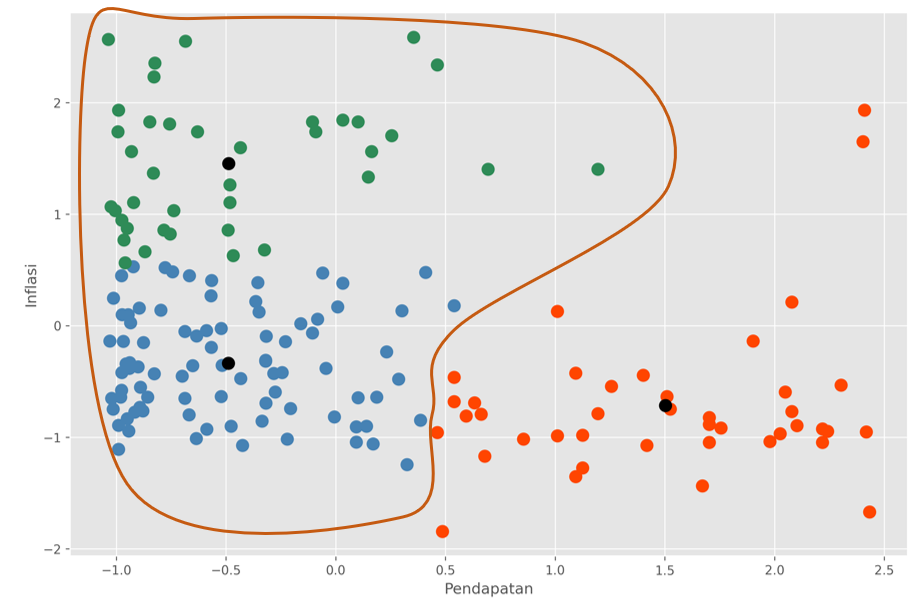
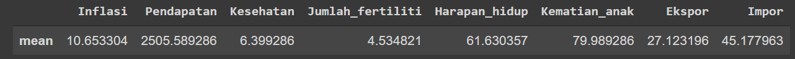
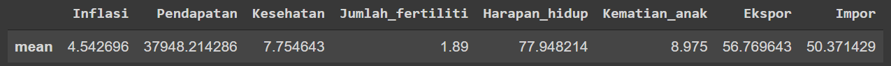
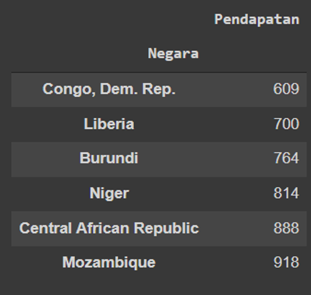

Aiding Tuition Promotion Strategy
Due to the fact that online studying hindered student's learning ability, thus tuition is certainly more favorable, especially if it is done directly(offline).
January 28, 2022

Problems
Offline studying policy had been ordered to school in the early month of January in the year 2022, which caused several debate about such policy. According to previous statement, our client which run in tuition services requested the aid of out services to provide sentiment analysis. Thus it is essential to understand the perspective of society about it to formulize some kind of promotion strategy.
Features
PTM: An offline learning policy used as a keyword to web scrape from Twitter and news website (Kompas.com)
Download Dataset
Analysis
Analysis of the sentiment was targeted 3 days prior (from 23 January 2022 untik 26 January 2022), resulting in 345 row of datas, consisting of 300 tweets and 45 news title.
Overall distribution of data
Based on data distribution, overall tweet and news title length are short, with no longer than 50 characters and no more than 16 sentences, indicating the tendency of short and simple way of sharing information.
Overall common word distribution and combination
PTM has the highest count based on the methodology of using that word as a keyword, resulting in the highest number. To further understand the sentiment of each of the tweets and news title, machine learning was used to conduct story building and context understanding. Based on the machine learning, we discovered there were 4 context, that is overall reffering to the increasing numbers of offline learning fro school and also encouragement for students, teachers, and parents.

Inflasion vs Earning
According to the hierarchy above, it is clear that earning(Pendapatan) effect and effected by inflation (Inflasi), thus, both of those variables are chosen for making clustering model. In this opportunity, K-Means Clustering is used due to the fact that the labeling of one countries' category is not yet clear, making unsupervised model more appealing.

Overall, there are two major groups of clustering, which is the higher income and lower income. For the lower income itself, it is divided again into two sub-clusters. To further understand why such sub-clusters are created, we can learn from the mean of each variables.

Mean from Lower Income Group

Mean from Mid Income Group

Mean from High Income Group
I would like to point out the fact there are three key variables that
contribute to the creation of sub-clusters according to the analysis above. Firstly, there are a
slight differences between two groups in fertility rate, where it is a bit higher in lower group.
Secondly, life expectancy from lower group is much lower compare to the mid group (in fact, the mid
group life expectancy is more resemble that of a higher group). And finally, expenses in healthcare.
Although lower group has more percentage (though not that much differences) from the mid group.
From here on, we could see what problem that lower group country is facing, that is the lower
life expectancy that is not in balance with the fertility rate. This is caused by the lack of
funding in the healthcare sector, and so I would like to propose the idea of aiding in such sector
for the countries with lower income that is less than 1000 because, based on previous analysis, we
conclude that the lowest income has the potential in a decrease in human resources, therefore, the
countries that I would to suggest is:
